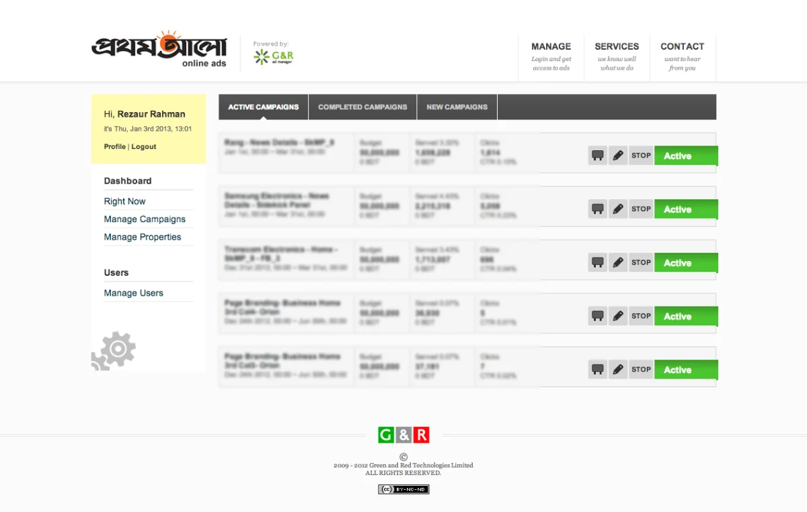
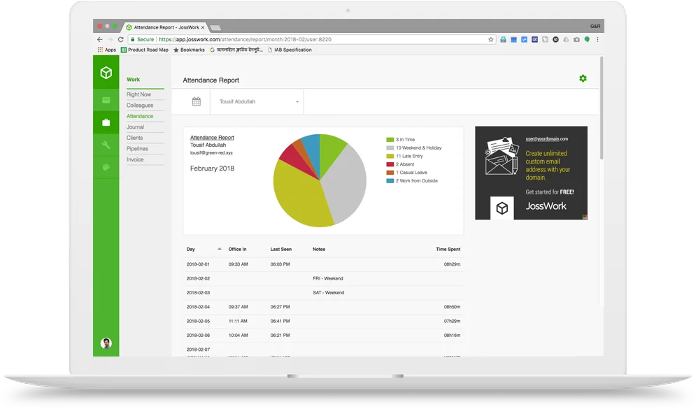
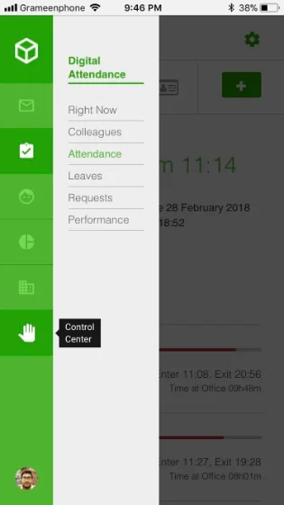
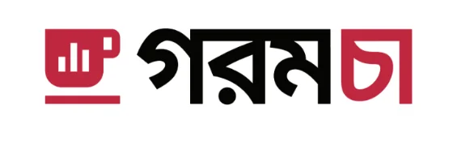
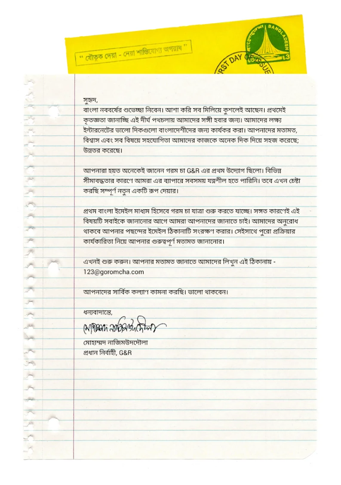
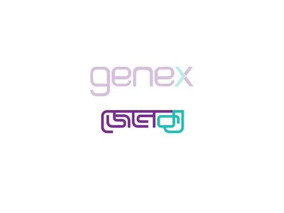

After launching the ad network in 2011, it became clear fairly quickly that G&R couldn't rely on a single product or platform. Ad tech, by nature, requires many different kinds of collaboration, publishers, advertisers, agencies, payment systems, and making that collaboration work smoothly meant we needed real technological control over more of the pipeline, not just the core ad-serving engine.
One of the earliest efforts in this direction was Ad Manager, a complete solution built for one of the biggest news platforms in Bangladesh. The idea was simple in principle: give the publisher the ability to run their own revenue engine directly, while our ad network sat underneath as backfill for whatever inventory went unsold.

The minimalistic design for Ad Manager - it only had the features those were important and useful.
It didn't work the way we intended. The system collapsed under real volume, and the client didn't give us a second chance. Looking back, I think we were simply too young as a company to properly absorb a failure at that scale. Instead of confronting it head-on, we mostly tried to move past it quietly and refocus energy on the core platform.
In 2014, we introduced a wallet system inside our own ad network, mainly to handle internal transactions more smoothly. That decision made something obvious almost immediately: we needed a real, regulated payment system behind it, not something improvised.
We started researching the regulatory landscape, but there weren't many local examples to learn from, and our own management took a long time to commit to a concrete direction. I personally spent a considerable amount of time on its documentation and concept development.
Around this same period, G&R started experimenting with a broader brand approach built around the word Joss, a Bangla expression that captures excitement and admiration. It became a kind of umbrella identity for a wave of new product attempts beyond the core ad network.
"Joss, a Bangla expression that captures excitement and admiration."
One of the more promising products to come out of this period was JossWork, a workspace tool built for small and medium businesses. We built a working MVP, and it actually got real traction, a handful of businesses, including G&R itself, started using it internally for communication, attendance tracking, leave management, internal chat, and status updates.

A simple unified design structure for different kind of devices - same layout for general user to people managers.
Digital Attendance was the module people leaned on most. It logged everyone's entry and exit times automatically and rolled them up into a daily view, so anyone could check who was in right now, browse colleagues, and see total time at office at a glance, no manual sign-in sheet, no separate tool. Leaves, requests, and performance sat right alongside it in the same sidebar, so a manager could move between attendance and approvals without switching apps.

JossWork in action from a mobile interface
The timing behind it made sense. Bangladesh's tech and SME sector was growing fast, and most of these growing businesses were stitching together a patchwork of separate paid tools just to run basic internal operations, one for chat, another for attendance, another for leave requests, each with its own subscription and its own login. That fragmentation was expensive and clumsy, and it created a real opening: a single, affordably priced workspace that covered the essentials a small or mid-sized team actually needed day to day.
It had genuine potential and real early acceptance. What it was missing wasn't product-market fit or user interest, it was clear direction from management. That gap eventually became the reason JossWork quietly died, despite everything pointing toward it being worth the investment.
Beyond JossPay and JossWork, we tried several other products during this period: JossDeal, TungTang, G&R Mobile, BanglaMeme, among others. None of these were meant to replace the core ad business, the intent was always to complement it, to build a wider ecosystem around the thing that actually worked.
Somewhere in this same reaching-past-the-ad-network instinct, we circled back to Goromcha, the product we'd started the whole company with back in 2010, and gave it a real second life. This move complemented JossWork directly: JossWork was focused on the business domain, and to build awareness around that service and show what we were capable of, we needed a public-facing email offering to put our name in front of everyday users.

Goromcha, relaunched, with a little bit different branding approach but keeping the root same
Rather than just refreshing the destination site, we rebuilt it around a model closer to what Yahoo had done: a content platform paired with its own email service, so a Bangladeshi user had one identity for reading local content and for communicating, both under the same roof.
The core focus never moved, it was still a local website first, but the shape of it grew. Even the email product got a name rooted in Bangla, the same instinct that had shaped Goromcha's identity from day one.
This wasn't a small side project, it was one of the bigger initiatives we took on during this whole period, touching product, engineering, and brand all at once. We rebuilt the platform's information architecture from the ground up and stood up entirely new infrastructure to run two very different kinds of products side by side, content delivery and real-time mail, under one account system.
Alongside that, we rebranded Goromcha itself, moving its identity away from a single destination site toward a more flexible mark, one that could sit across a content platform, an email service, and whatever we adapted it to serve next.

One of my most favorite announcement ever - to let our user know about the new approach of Goromcha. A letter posted in the inbox.
Toward the close of this chapter, some of my attention shifted toward Genex, G&R's parent company, and helping it build better brand visibility as it prepared for what came next. Genex had always been the name behind the name, well known inside the group but with almost no public identity of its own, and that started to matter as the company's ambitions grew. I worked closely on its social media strategy, shaping how it introduced itself to an audience that, until then, had mostly known it only through G&R.

The Bangla mark I designed for Genex - maybe one of the best of this time.
The piece I'm proudest of from this window is a Bangla version of the Genex logo I designed, a mark the company still uses today as a core branding asset. Giving the identity a Bangla expression felt consistent with everything else I'd worked on across G&R, a company built in Bangladesh should be able to speak in its own language, visually as much as in words.
Our team also put together Genex's brand guideline, the first real reference document defining how the identity should be used consistently across every touchpoint, logo usage, color, typography, tone, so the brand could scale beyond whatever any one of us happened to remember at the time.
Looking back at this whole period, the pattern is fairly clear. G&R kept reaching past the ad network, sometimes too early, sometimes without the internal discipline to see a good idea through, but always with the same underlying instinct: that a single product, however successful, wasn't going to be enough to build something lasting.
Some of these bets failed outright, like Ad Manager. Some had real promise but died from a lack of direction, like JossWork. And one, JossPay, took so long to clear regulatory ground that by the time it could launch, the market had already moved past it. None of them were wasted, though. Every one of these attempts shaped how the company thought about its own future, and set the stage for what came next: G&R's path toward acquisition and IPO.